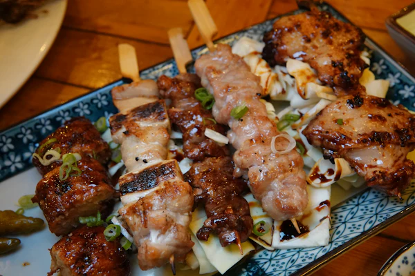
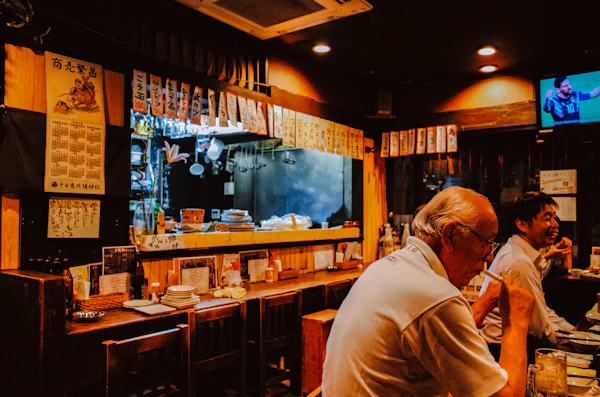
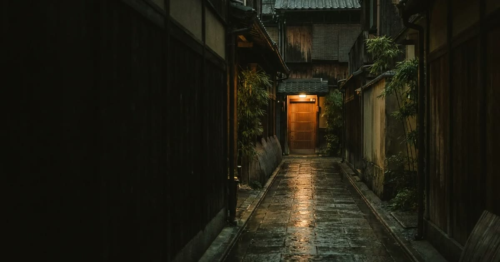

Works
お店の性格に合わせて、静けさで単価を上げる方向と、賑わいで回転を上げる方向を作り分けています。以下はすべて架空の店舗で作ったデモです。


大衆酒場 ／ 大井町
串カツ120円から。同じ作り方は使いません。提灯の赤、短冊の品書き、判子で押し出す見出し。世界観そのものを設計しています。

※掲載しているのはすべて架空の店舗です。店名・住所・電話番号・価格・人物・口コミは制作実績紹介のための設定であり、実在のものとは関係ありません。
※各デモの予約フォームは通信を行いません。送信しても予約は成立しません。
※「制作ノート」は、画面の裏で何をしているかを店主さま向けにまとめた解説シートです。実案件では納品物に同梱します。